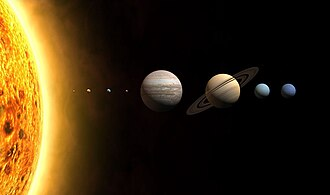

O universo é cheio de mistérios, cores e paisagens incríveis. Entre bilhões de estrelas, existe um pequeno conjunto de planetas que chamamos de lar: o Sistema Solar.
Neste projeto, vamos explorar três mundos fascinantes: Marte, Saturno e Netuno. Prepare-se para conhecer algumas de suas características e descobrir curiosidades sobre esses lugares tão diferentes da Terra!
Um mundo rochoso, frio e cheio de paisagens que lembram desertos. Marte é um dos planetas que mais despertam a curiosidade dos cientistas.
Gigante e impressionante, Saturno é conhecido por seu magnífico sistema de anéis. Uma das imagens mais bonitas do nosso Sistema Solar!
Distante e misterioso, Netuno é um planeta de ventos extremamente fortes e uma atmosfera de tonalidade azulada.
O universo é muito maior do que imaginamos. Continue explorando!